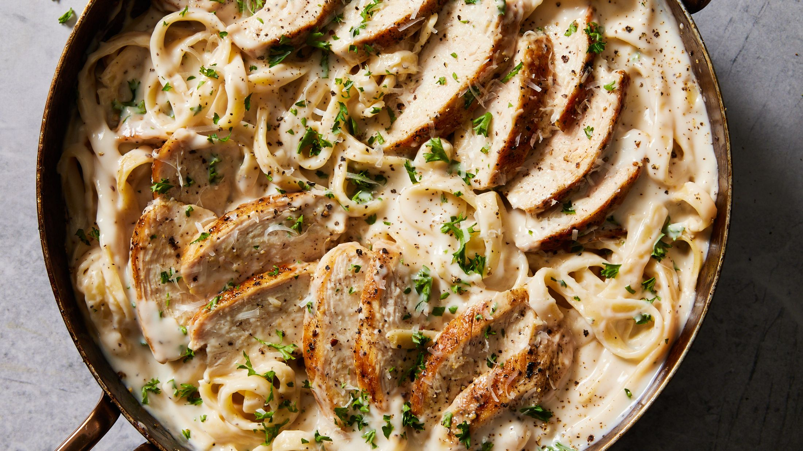

Chicken Alfredo

Description
Alfredo with roasted chicken thighs are a delicious classic that I have simplified to be able to prep in a convenient time span
Ingredients
- Chicken Thighs
- Pasta (you choose the shape)
- Store-Bought Alfredo Sauce
- Olive Oil
- Seasoning of choice
Steps
- Get a big pot and fill with water, then bring to a boil
- While it begins to boil, season chicken thighs
- Coat chicken with olive oil and throw in the air fryer at 400 for 20 mins (flip half way)
- Boil pasta
- Drain pasta water and strain pasta
- As Chicken finishes, chop it up in pieces
- Dump alfredo sauce in pot and heat until it bubbles
- Add pasta to sauce and stir
- Add chicken and stir
- Voila